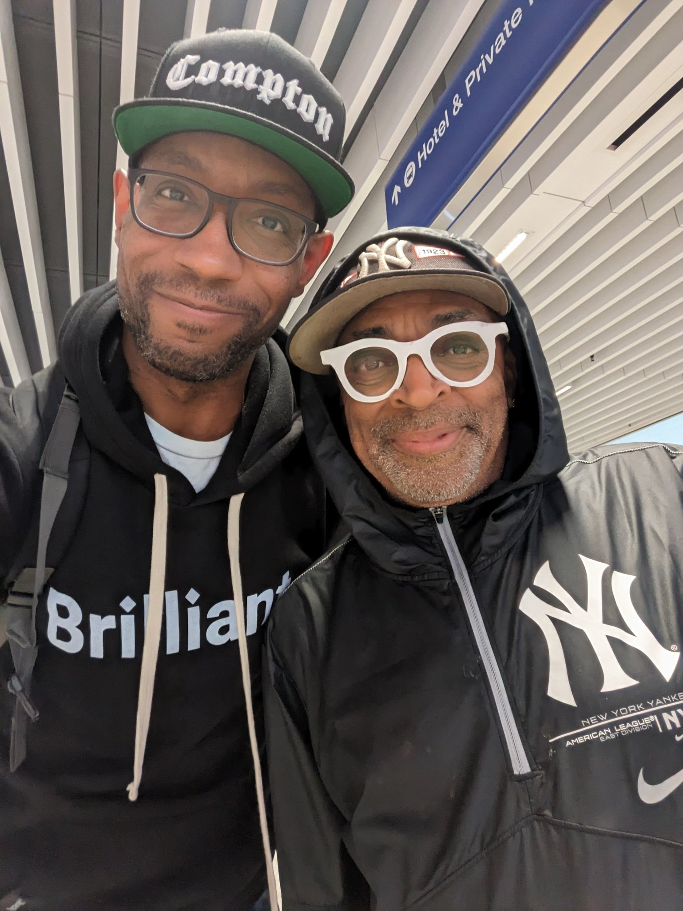
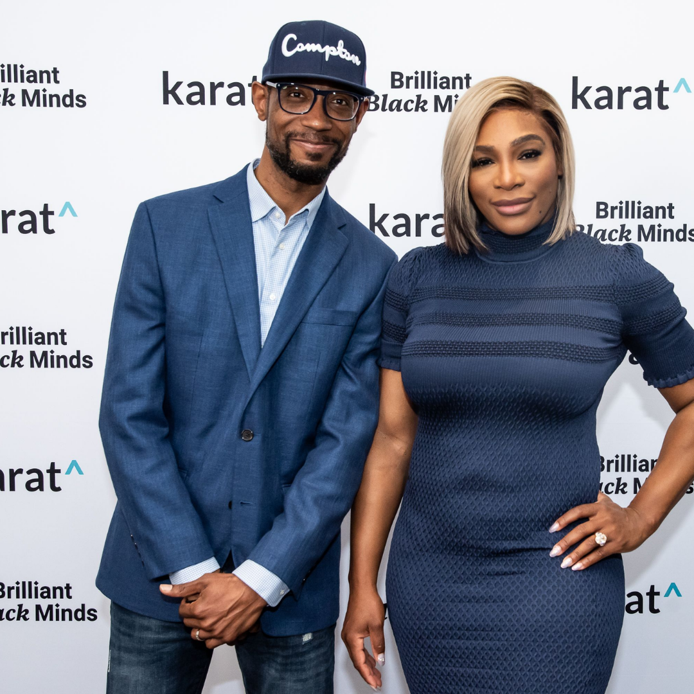

Anthony D. Mays README
Introduction
Anthony is a software engineer with over 20 years of industry experience and a former foster kid from Compton. He has worked for companies including City National Bank, Slalom Consulting, and most recently, Google. Currently the full-time founder of Morgan Latimer Consulting, Anthony is dedicated to providing the next generation of technologists with tools that will help them thrive in their career.
Prerequisites
- Single-origin, medium roast coffee from Africa.
- Daily Bible study and prayer
- Jazz / hip-hop fusion with strong piano lines, bass, and drums. Favorite artists right now are Kiefer, Glimlip, Ashley Henry, and Tom Misch.
- Not operational on Sunday's. That's the Lord's Day so I'm closed for business.
- Smoked meats and BBQ of pretty much any variety (pork, beef, chicken, lamb, etc.).
Installation Instructions
- It's best to get in touch with me after 9am PT on most days. I'm not an early riser.
- I'm instant human, just add coffee.
- There is usually no shortage of things I need to do on any given day as a full-time entrepreneur, so scheduling time with me is usually best. I'm good at ignoring ad-hoc messages.
- Email communication is the best as my inbox is one of the tools I use for priority management. There's a high chance I will miss messages on LinkedIn and Twitter, so don't be afraid to ping me again if I don't respond in a timely manner.
- Before you ask me a question about your tech career, make sure to check my blog at anthonydmays.com/blog to ensure that I haven't already answered it. I also cross post articles on LinkedIn and Medium.
Support
- You can find me on LinkedIn, Twitter, Instagram, and my website at anthonydmays.com if you want to reach out. If you need help with career and interview prep, book a free consultation with me at morganlatimer.com.
Fun Facts
- I've been playing the piano since I was 7 years old (my other keyboard is a Yamaha!).
- My first programming language was BASIC, which I learned at the age of 8.
- A viral BuzzFeed documentary about my journey from Compton to Google was published in 2018.
- I am a licensed minister in the State of California.
Photo Gallery

